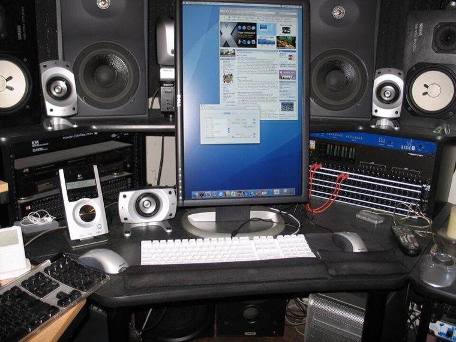

[ INDIVIDUAL COMPONENT // DISPLAYS ]
Dell UltraSharp 2405FPW
24-inch 16:10 LCD with broad video inputs, mid-2000s. LCD

IDENTIFICATION: Verify the complete model/revision on the rear label. Specifications are tied to the cited manual/specification; variant-dependent values are qualified rather than generalized.
Specifications
| Catalog subcategory | Lcd Displays |
|---|---|
| Exact product/family | Dell UltraSharp 2405FPW |
| Era | 24-inch 16:10 LCD with broad video inputs, mid-2000s. |
| Panel / image | 24-inch active-matrix TFT LCD; native 1920 × 1200 at 60 Hz; 0.270 mm pixel pitch. |
| Inputs | DVI-D, VGA, component, composite and S-Video; USB 2.0 hub and card reader are peripherals. |
| Power / mechanical | Up to 90 W; 100–240 V, 50/60 Hz in user guide. Adjustable stand; check actual stand and unit label. |
| Video | TV/video inputs do not share all desktop modes available on DVI/VGA. |
Revision, signal & host compatibility
Distinguish 2405FPW from 2407WFP revisions: input set and panel behavior differ. For native PC mode use supported DVI/VGA timing; source must meet DVI/HDCP needs. Composite/component/S-video are separate analog paths.
Match source signal type, sync/timing, connector pinout, bandwidth and power path to this exact display. Physical connector fit alone does not establish electrical or timing compatibility.
Preservation & repair notes
Test inputs separately, then USB/card reader, buttons and backlight. Preserve original stand and power cable; avoid panel pressure and use correct isolation/service practice for internal PSU/backlight repair.
Record model suffix, serial/date label, accessories, image condition, configuration, source document and repair history. CRT high-voltage, LCD backlight and OLED panel risks require appropriate service training and the correct manual.
Manufacturer manuals & references
- Dell UltraSharp 2405FPW User ManualModel manual for connections, supported modes and power.
- Dell UltraSharp 2405FPW User Guide scanArchival copy of model documentation.